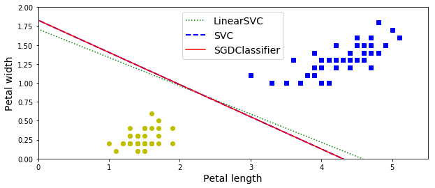

hands-on svm课后作业
train a LinearSVC on a linearly separable dataset. Then train an SVC and a SGDClassifier on the same dataset. See if you can get them to produce roughly the same mode
1 | from sklearn import datasets |
1 | X = iris["data"][:, (2, 3)] #X.shape (150, 2) |
- using SVC（kernel = “linear”) is much slower than LinearSVC
- SGDClassifier(loss = “hinge”) this aplies regular SGD to train alinear SVM classifier
_tip: The Linear SVC class regularizes the bias term, so you should center the trainset fiest by subtracting its mean. In sklearn，This is automatic if you scale the data using the StandarScaler
1 | import numpy as np |
LinearSVC: [0.28474027] [[1.0536456 1.09903032]]
SVC: [0.31896852] [[1.1203284 1.02625193]]
SGDClassifier(alpha=0.00200): [0.319] [[1.12072936 1.02666842]]
- 得到参数了 画出图来看看（线性模型中 intercept θ0 coef θ1， θ2）
又两个参数 ， 同时除以 θ2 得到一个一维 ： y = wx + b 的形式
1 | %matplotlib inline |

Train an SVM classifier on the MNIST dataset. Since SVM classifiers are binaryclassifiers, you will need to use one-versus-all to classify all 10 digits. You may want to tune the hyperparameters using small validation sets to speed up the pro‐cess. What accuracy can you reach
1 | import warnings |
1 | from sklearn.datasets import fetch_mldata |
{'DESCR': 'mldata.org dataset: mnist-original',
'COL_NAMES': ['label', 'data'],
'target': array([0., 0., 0., ..., 9., 9., 9.]),
'data': array([[0, 0, 0, ..., 0, 0, 0],
[0, 0, 0, ..., 0, 0, 0],
[0, 0, 0, ..., 0, 0, 0],
...,
[0, 0, 0, ..., 0, 0, 0],
[0, 0, 0, ..., 0, 0, 0],
[0, 0, 0, ..., 0, 0, 0]], dtype=uint8)}
1 | X, y = mnist["data"], mnist["target"] |
1 | lin_clf = LinearSVC(random_state=42) |
LinearSVC(C=1.0, class_weight=None, dual=True, fit_intercept=True,
intercept_scaling=1, loss='squared_hinge', max_iter=1000,
multi_class='ovr', penalty='l2', random_state=42, tol=0.0001,
verbose=0)
1 | from sklearn.metrics import accuracy_score |
0.8747
1 | scaler = StandardScaler() |
1 | lin_clf = LinearSVC(random_state=42) |
LinearSVC(C=1.0, class_weight=None, dual=True, fit_intercept=True,
intercept_scaling=1, loss='squared_hinge', max_iter=1000,
multi_class='ovr', penalty='l2', random_state=42, tol=0.0001,
verbose=0)
1 | y_pred = lin_clf.predict(X_train_scaled) |
0.9199
1 | svm_clf = SVC(decision_function_shape="ovr", gamma="auto") |
SVC(C=1.0, cache_size=200, class_weight=None, coef0=0.0,
decision_function_shape='ovr', degree=3, gamma='auto', kernel='rbf',
max_iter=-1, probability=False, random_state=None, shrinking=True,
tol=0.001, verbose=False)
1 | y_pred = svm_clf.predict(X_train_scaled[:6000]) |
0.9775
1 | from sklearn.model_selection import RandomizedSearchCV |
Fitting 3 folds for each of 5 candidates, totalling 15 fits
[CV] C=6.249402615871811, gamma=0.07077378550552337 ..................
[Parallel(n_jobs=1)]: Using backend SequentialBackend with 1 concurrent workers.
[CV] ... C=6.249402615871811, gamma=0.07077378550552337, total= 0.1s
[CV] C=6.249402615871811, gamma=0.07077378550552337 ..................
[Parallel(n_jobs=1)]: Done 1 out of 1 | elapsed: 0.2s remaining: 0.0s
[CV] ... C=6.249402615871811, gamma=0.07077378550552337, total= 0.1s
[CV] C=6.249402615871811, gamma=0.07077378550552337 ..................
[CV] ... C=6.249402615871811, gamma=0.07077378550552337, total= 0.1s
[CV] C=1.8908728532899979, gamma=0.05548178308647815 .................
[CV] .. C=1.8908728532899979, gamma=0.05548178308647815, total= 0.1s
[CV] C=1.8908728532899979, gamma=0.05548178308647815 .................
[CV] .. C=1.8908728532899979, gamma=0.05548178308647815, total= 0.1s
[CV] C=1.8908728532899979, gamma=0.05548178308647815 .................
[CV] .. C=1.8908728532899979, gamma=0.05548178308647815, total= 0.1s
[CV] C=6.575575197236928, gamma=0.010917851017824925 .................
[CV] .. C=6.575575197236928, gamma=0.010917851017824925, total= 0.1s
[CV] C=6.575575197236928, gamma=0.010917851017824925 .................
[CV] .. C=6.575575197236928, gamma=0.010917851017824925, total= 0.1s
[CV] C=6.575575197236928, gamma=0.010917851017824925 .................
[CV] .. C=6.575575197236928, gamma=0.010917851017824925, total= 0.1s
[CV] C=8.103984118328173, gamma=0.0010976969181254448 ................
[CV] . C=8.103984118328173, gamma=0.0010976969181254448, total= 0.1s
[CV] C=8.103984118328173, gamma=0.0010976969181254448 ................
[CV] . C=8.103984118328173, gamma=0.0010976969181254448, total= 0.1s
[CV] C=8.103984118328173, gamma=0.0010976969181254448 ................
[CV] . C=8.103984118328173, gamma=0.0010976969181254448, total= 0.1s
[CV] C=3.8772829451317716, gamma=0.002522772748672047 ................
[CV] . C=3.8772829451317716, gamma=0.002522772748672047, total= 0.1s
[CV] C=3.8772829451317716, gamma=0.002522772748672047 ................
[CV] . C=3.8772829451317716, gamma=0.002522772748672047, total= 0.1s
[CV] C=3.8772829451317716, gamma=0.002522772748672047 ................
[CV] . C=3.8772829451317716, gamma=0.002522772748672047, total= 0.1s
[Parallel(n_jobs=1)]: Done 15 out of 15 | elapsed: 4.2s finished
RandomizedSearchCV(cv=3, error_score='raise-deprecating',
estimator=SVC(C=1.0, cache_size=200, class_weight=None, coef0=0.0,
decision_function_shape='ovr', degree=3, gamma='auto', kernel='rbf',
max_iter=-1, probability=False, random_state=None, shrinking=True,
tol=0.001, verbose=False),
fit_params=None, iid='warn', n_iter=5, n_jobs=None,
param_distributions={'gamma': <scipy.stats._distn_infrastructure.rv_frozen object at 0x000002A3E9698CC0>, 'C': <scipy.stats._distn_infrastructure.rv_frozen object at 0x000002A3EAA16390>},
pre_dispatch='2*n_jobs', random_state=None, refit=True,
return_train_score='warn', scoring=None, verbose=2)
1 | rnd_search_cv.best_params_ |
{'C': 8.103984118328173, 'gamma': 0.0010976969181254448}
1 | rnd_search_cv.best_score_ |
0.802
1 | rnd_search_cv.best_estimator_.fit(X_train_scaled[:6000], y_train[:6000]) |
SVC(C=8.103984118328173, cache_size=200, class_weight=None, coef0=0.0,
decision_function_shape='ovr', degree=3, gamma=0.0010976969181254448,
kernel='rbf', max_iter=-1, probability=False, random_state=None,
shrinking=True, tol=0.001, verbose=False)
1 | y_pred = rnd_search_cv.best_estimator_.predict(X_train_scaled[:6000]) |
0.9991666666666666
1 | y_pred = rnd_search_cv.best_estimator_.predict(X_test_scaled) |
0.9404
Train an SVM regressor on the California housing dataset
1 | from sklearn.datasets import fetch_california_housing |
1 | from sklearn.model_selection import train_test_split |
1 | from sklearn.preprocessing import StandardScaler |
1 | from sklearn.svm import LinearSVR |
LinearSVR(C=1.0, dual=True, epsilon=0.0, fit_intercept=True,
intercept_scaling=1.0, loss='epsilon_insensitive', max_iter=1000,
random_state=None, tol=0.0001, verbose=0)
1 | # from sklearn.metrics import accuracy_score |
0.9541764911842403
1 | from sklearn.svm import SVR |
Fitting 3 folds for each of 10 candidates, totalling 30 fits
[CV] C=4.745401188473625, gamma=0.07969454818643928 ..................
[Parallel(n_jobs=1)]: Using backend SequentialBackend with 1 concurrent workers.
[CV] ... C=4.745401188473625, gamma=0.07969454818643928, total= 5.9s
[CV] C=4.745401188473625, gamma=0.07969454818643928 ..................
[Parallel(n_jobs=1)]: Done 1 out of 1 | elapsed: 7.7s remaining: 0.0s
[CV] ... C=4.745401188473625, gamma=0.07969454818643928, total= 5.6s
[CV] C=4.745401188473625, gamma=0.07969454818643928 ..................
[CV] ... C=4.745401188473625, gamma=0.07969454818643928, total= 5.8s
[CV] C=8.31993941811405, gamma=0.015751320499779724 ..................
[CV] ... C=8.31993941811405, gamma=0.015751320499779724, total= 5.5s
[CV] C=8.31993941811405, gamma=0.015751320499779724 ..................
[CV] ... C=8.31993941811405, gamma=0.015751320499779724, total= 5.4s
[CV] C=8.31993941811405, gamma=0.015751320499779724 ..................
[CV] ... C=8.31993941811405, gamma=0.015751320499779724, total= 6.1s
[CV] C=2.560186404424365, gamma=0.002051110418843397 .................
[CV] .. C=2.560186404424365, gamma=0.002051110418843397, total= 5.4s
[CV] C=2.560186404424365, gamma=0.002051110418843397 .................
[CV] .. C=2.560186404424365, gamma=0.002051110418843397, total= 5.1s
[CV] C=2.560186404424365, gamma=0.002051110418843397 .................
[CV] .. C=2.560186404424365, gamma=0.002051110418843397, total= 4.7s
[CV] C=1.5808361216819946, gamma=0.05399484409787431 .................
[CV] .. C=1.5808361216819946, gamma=0.05399484409787431, total= 4.7s
[CV] C=1.5808361216819946, gamma=0.05399484409787431 .................
[CV] .. C=1.5808361216819946, gamma=0.05399484409787431, total= 4.8s
[CV] C=1.5808361216819946, gamma=0.05399484409787431 .................
[CV] .. C=1.5808361216819946, gamma=0.05399484409787431, total= 4.7s
[CV] C=7.011150117432088, gamma=0.026070247583707663 .................
[CV] .. C=7.011150117432088, gamma=0.026070247583707663, total= 5.8s
[CV] C=7.011150117432088, gamma=0.026070247583707663 .................
[CV] .. C=7.011150117432088, gamma=0.026070247583707663, total= 5.6s
[CV] C=7.011150117432088, gamma=0.026070247583707663 .................
[CV] .. C=7.011150117432088, gamma=0.026070247583707663, total= 5.8s
[CV] C=1.2058449429580245, gamma=0.0870602087830485 ..................
[CV] ... C=1.2058449429580245, gamma=0.0870602087830485, total= 5.0s
[CV] C=1.2058449429580245, gamma=0.0870602087830485 ..................
[CV] ... C=1.2058449429580245, gamma=0.0870602087830485, total= 5.3s
[CV] C=1.2058449429580245, gamma=0.0870602087830485 ..................
[CV] ... C=1.2058449429580245, gamma=0.0870602087830485, total= 4.9s
[CV] C=9.324426408004218, gamma=0.0026587543983272693 ................
[CV] . C=9.324426408004218, gamma=0.0026587543983272693, total= 5.2s
[CV] C=9.324426408004218, gamma=0.0026587543983272693 ................
[CV] . C=9.324426408004218, gamma=0.0026587543983272693, total= 4.9s
[CV] C=9.324426408004218, gamma=0.0026587543983272693 ................
[CV] . C=9.324426408004218, gamma=0.0026587543983272693, total= 4.7s
[CV] C=2.818249672071006, gamma=0.0023270677083837795 ................
[CV] . C=2.818249672071006, gamma=0.0023270677083837795, total= 4.8s
[CV] C=2.818249672071006, gamma=0.0023270677083837795 ................
[CV] . C=2.818249672071006, gamma=0.0023270677083837795, total= 4.7s
[CV] C=2.818249672071006, gamma=0.0023270677083837795 ................
[CV] . C=2.818249672071006, gamma=0.0023270677083837795, total= 5.0s
[CV] C=4.042422429595377, gamma=0.011207606211860567 .................
[CV] .. C=4.042422429595377, gamma=0.011207606211860567, total= 5.1s
[CV] C=4.042422429595377, gamma=0.011207606211860567 .................
[CV] .. C=4.042422429595377, gamma=0.011207606211860567, total= 5.2s
[CV] C=4.042422429595377, gamma=0.011207606211860567 .................
[CV] .. C=4.042422429595377, gamma=0.011207606211860567, total= 5.5s
[CV] C=5.319450186421157, gamma=0.003823475224675185 .................
[CV] .. C=5.319450186421157, gamma=0.003823475224675185, total= 5.0s
[CV] C=5.319450186421157, gamma=0.003823475224675185 .................
[CV] .. C=5.319450186421157, gamma=0.003823475224675185, total= 4.7s
[CV] C=5.319450186421157, gamma=0.003823475224675185 .................
[CV] .. C=5.319450186421157, gamma=0.003823475224675185, total= 4.8s
[Parallel(n_jobs=1)]: Done 30 out of 30 | elapsed: 3.7min finished
RandomizedSearchCV(cv=3, error_score='raise-deprecating',
estimator=SVR(C=1.0, cache_size=200, coef0=0.0, degree=3, epsilon=0.1,
gamma='auto_deprecated', kernel='rbf', max_iter=-1, shrinking=True,
tol=0.001, verbose=False),
fit_params=None, iid='warn', n_iter=10, n_jobs=None,
param_distributions={'gamma': <scipy.stats._distn_infrastructure.rv_frozen object at 0x000002A3EAB4C630>, 'C': <scipy.stats._distn_infrastructure.rv_frozen object at 0x000002A3EAB26E80>},
pre_dispatch='2*n_jobs', random_state=42, refit=True,
return_train_score='warn', scoring=None, verbose=2)
1 | rnd_search_cv.best_estimator_ |
SVR(C=4.745401188473625, cache_size=200, coef0=0.0, degree=3, epsilon=0.1,
gamma=0.07969454818643928, kernel='rbf', max_iter=-1, shrinking=True,
tol=0.001, verbose=False)
1 | y_pred = rnd_search_cv.best_estimator_.predict(X_train_scaled) |
0.3280453999995986
1 |